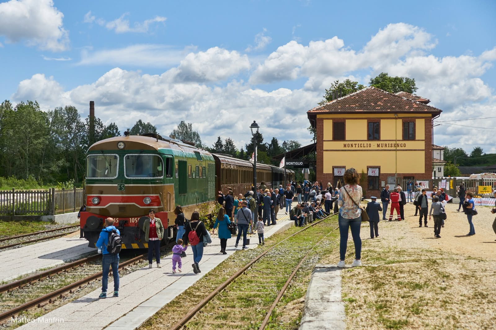
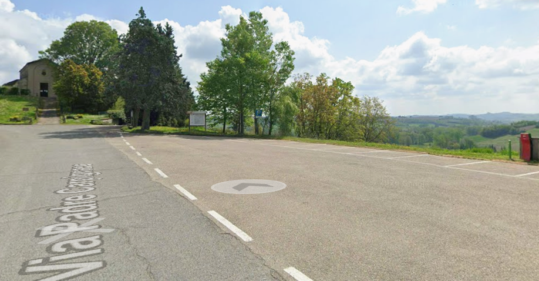
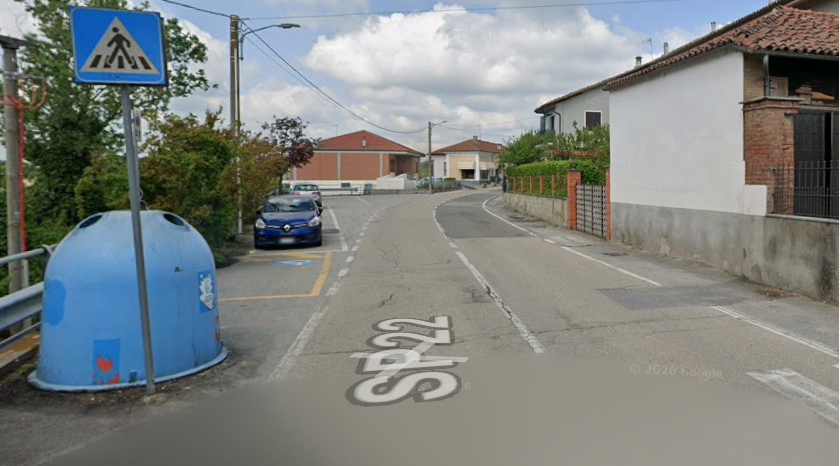
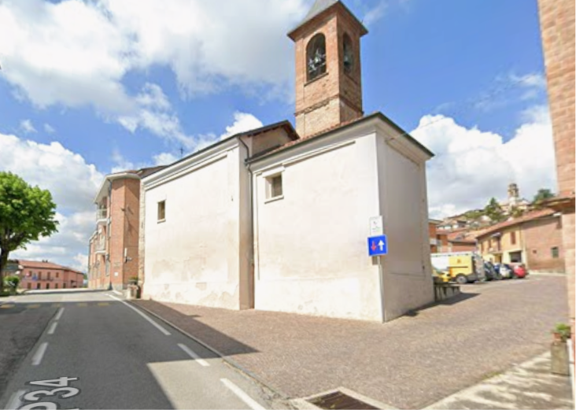
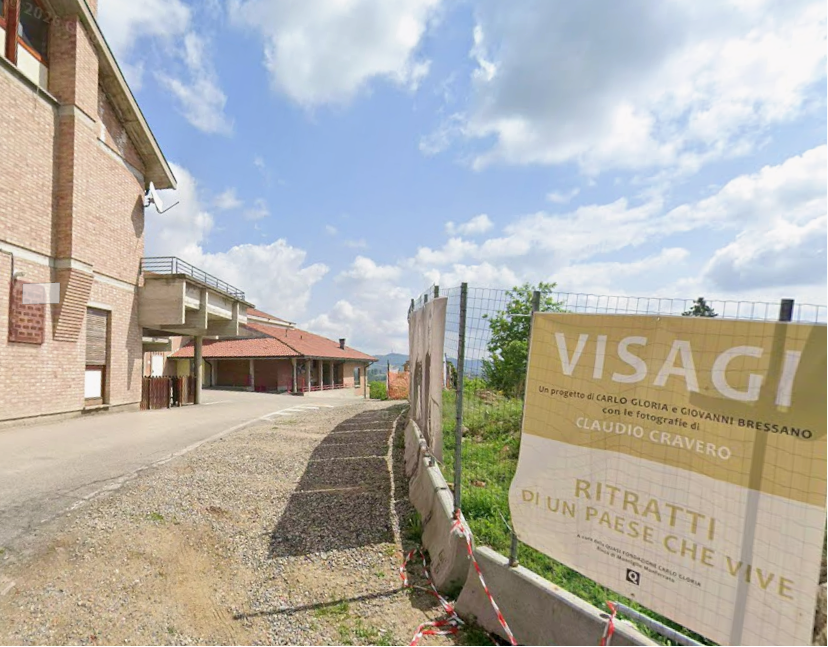
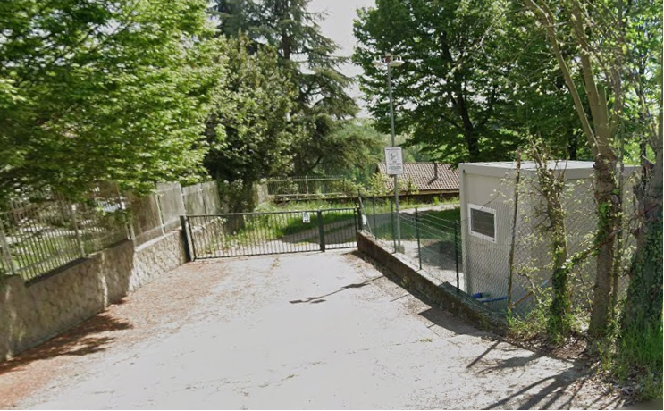
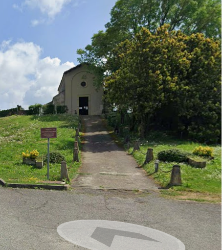

Punto Accoglienza 1
Ufficio Turistico
Piazza Regina Margherita 18

Benvenuti alla fiera che ti viene incontro

La Fiera del Tartufo di Montiglio Monferrato vuole essere un’esperienza piacevole per tutti: abbiamo raccolto queste informazioni per aiutarti a capire in anticipo come è organizzata la fiera per persone con disabilità, famiglie con bambini, anziani, accompagnatori e visitatori con esigenze specifiche.
In questa pagina sono raccolte le principali informazioni utili per organizzare la propria partecipazione e conoscere in anticipo i servizi disponibili.
Data: 4 e 11 Ottobre 2026
Luogo: Montiglio Monferrato (AT)
Email: infopointmontiglio@gmail.com
Telefono: 391 7277165
Per esigenze particolari è consigliato contattare l'organizzazione prima dell'evento.

Se vuoi arrivare subito alla risposta giusta, scegli il pulsante più adatto:
Si consiglia di consultare la mappa prima della visita per pianificare il percorso più adatto alle proprie esigenze.
Durante l'evento saranno attivi due punti di accoglienza dove ottenere informazioni, supporto e orientamento:
Ufficio Turistico
Piazza Regina Margherita 18
Entrata Sala Consiliare presso il Comune di Montiglio Monferrato
Piazza Umberto I

Il personale e i volontari potranno fornire indicazioni sui percorsi, sulle attività in programma e sui servizi disponibili.
Il 4 e l’11 ottobre puoi raggiungere Montiglio Monferrato con il treno storico LocoMonferrato, partendo da Torino Porta Nuova, Torino Lingotto, Moncalieri o Asti.
È un’opportunità per iniziare la giornata con un viaggio suggestivo e per partecipare alla Fiera senza utilizzare l’auto: una soluzione particolarmente utile per chi non guida, non dispone di un’automobile o preferisce evitare traffico e parcheggi.
All’arrivo alla stazione di Montiglio è previsto il collegamento con l’area della Fiera tramite trenino o navetta.

I treni storici presentano limiti fisici che non possono essere eliminati. Non consentono l’accesso autonomo in carrozzina e non sono adatti alle persone che non possono salire gradini alti. Per informazioni sulla accessibilità al treno: www.comispiemonte.it/locomonferrato/accessibilita/.
Per acquistare il biglietto consulta www.comispiemonte.it.
In occasione della fiera vengono messi a disposizione parcheggi aggiuntivi dedicati alle persone con contrassegno disabili.
Parcheggi riservati in Via Padre Carpignano e davanti alla Pieve di San Lorenzo.
Via Padre Carpignano
Pieve di San Lorenzo

Parcheggio riservato sullo spiazzo in Via Torino.
Via Torino

Parcheggio riservato dietro alla Chiesa di San Rocco.
Via Torino

Tutti e tre questi parcheggi consentono un accesso agevole all'area degli espositori.
Per accedere all'area ristorazione con prenotazione.
Ingresso da Via Roma-Via Mazzini

Per partecipare al Walking Tour del centro storico.
Piazza Umberto I

Per accedere all'area di ristorazione senza prenotazione.
Via Asti

La visita agli espositori intorno a Piazza Regina Margherita può essere effettuata lungo percorsi privi di barriere rilevanti.
L'area è attrezzata per consentire l'accesso alle persone che utilizzano carrozzine o ausili per la mobilità.
È possibile salire con la vettura fino al sagrato della Pieve per il tempo limitato della visita ed in caso di necessità.

Informazioni sul Walking Tour e prenotazioni sul sito Visit LMR: www.visitlmr.it/it/esperienze/montiglio-monferrato-walking-tour.
Il percorso panoramico comprende alcune aree che presentano limitazioni:
Restano invece accessibili:
Si segnala la presenza di alcuni tratti con pavimentazione in porfido ed in lieve salita.
Nel pomeriggio il trenino facilita la salita verso il Castello e le aree del Walking Tour. Al mattino e alla sera il servizio viene utilizzato anche per il collegamento con la stazione ferroviaria.
L'utilizzo di trenino e navetta è sconsigliato per persone con disabilità motoria che sono pregate di utilizzare i parcheggi riservati.
Sono disponibili tre servizi igienici attrezzati per persone con disabilità:
Sono inoltre presenti ulteriori servizi pubblici distribuiti nell'area dell'evento.
Per chi necessita di una pausa in un ambiente più tranquillo sono disponibili due aree di decompressione: una dietro l'Ufficio Turistico, la seconda presso il giardinetto per bambini in Piazza Regina Margherita.
Le aree sono separate dalla zona principale della Fiera e offrono uno spazio più raccolto a breve distanza dalle zone espositori.
Le preparazioni alimentari della Pro Loco non garantiscono l'assenza di contaminazione crociata.
Le offerte alimentari degli espositori sono di responsabilità degli stessi.
Per migliorare l'accoglienza e predisporre eventuali servizi dedicati è possibile comunicare in anticipo le proprie esigenze contattando i volontari della Pro Loco di Montiglio Monferrato.
Contatta il supporto dedicato ora per ricevere informazioni personalizzate:
Email: infopointmontiglio@gmail.com
Telefono: 391 7277165
L'organizzazione raccoglie suggerimenti e osservazioni per continuare a migliorare le future edizioni dell'evento.
Privacy e statistiche
Questo sito non utilizza servizi di analisi delle visite.
La Fiera del Tartufo di Montiglio Monferrato è realizzata grazie al sostegno della Fondazione CRT nell'ambito del programma "Eventi for All", che promuove eventi inclusivi e accessibili fondati su sostenibilità ambientale, protagonismo giovanile e valorizzazione del volontariato, con l'obiettivo di generare partecipazione e valore per il territorio.